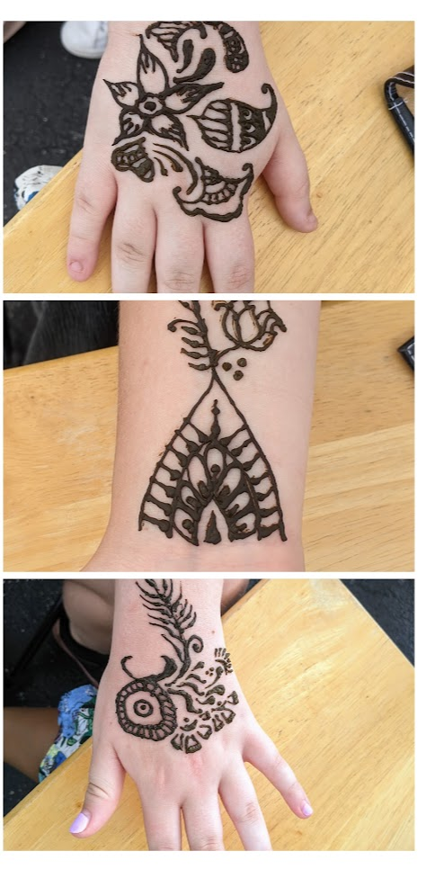

Applied in beautiful, intricate designs on the hands, arms, and ankles; henna is a greenish brown paste made from powdered plant material and eucalyptus oil. A plastic cone, similar to a piping tube, is filled with the paste and then used to apply by the artist. The henna dries and hardens (as indicated by darkening color) approximately 30-40 min following its application. From here, it flakes off and leaves an orange stain on the skin. Overnight, it darkens to a coffee brown shade that retains that hue for up to a week. [Perhaps info about skincare.] Traditionally, henna is applied during occasions such as weddings, baby showers, and other auspicious dates. There are Arabic and Indian styles of designs, with the latter typically consisting of greater detail. Historically, henna was known for its cooling properties; people who lived in hot desert climates (such as that of the Middle East, Pakistan, and India) resorted to dipping their hands and feet in pools of henna to lower body temperature. Eventually, they began to notice the curious patterns that the henna left behind on their skin and sought methods to decorate themselves intentionally.